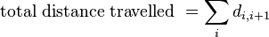
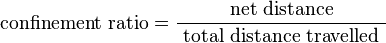
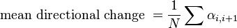

Please direct any questions or issues to this Image.sc Forum thread.
Thank you for your patience as we improve the website!
TrackMate Algorithms
This page documents the current components of TrackMate. TrackMate has a modular design, meaning that it is made of different modules that each have a specific role. Developers can build their own module and re-used the other ones and the GUI to achieve a quick development. The module types are (in the order you meet them when executing the plugin):
- Spot detectors. Taking your image data, they detect spots in them.
- Spot analyzers. Each spot can receive a wide range of features, calculated from their location, radius and the image data. For instance: max intensity in spot, rough morphology, etc... They are then used to filter out spurious spots and retain only good ones for the subsequent tracking step.
- Views. Display the segmentation and tracking results overlaid on your image data.
- Spot trackers. Take the filtered spots and link them together to build tracks.
- Track analyzers. Like for spot analyzers, but operate on whole track. Can be used to report track mean velocity, displacement, etc... They are also used to filter spurious tracks.
- Actions. Miscellaneous actions you can take on the complete result of the tracking process. It can be used to copy the track overlay to another image, launch a 3D viewer, export the results to a simple format, generate a track stack, etc...
We describe here the best we can the current modules that are shipped with TrackMate.
Contents
- 1 Spot detectors
- 2 Spot analyzers
- 3 Track analyzers.
- 4 Spot trackers
- 5 References
Spot detectors
Spot features generated by the spot detectors
Behind this barbaric name stand the part responsible for spot detection in your image. The algorithm currently implemented are very generic and naive. They will most likely fail for complicated case such as touching objects, very weak SNR, etc... The 3 of them present are all based on Laplacian of Gaussian filtering, which we describe below.
All detectors must at least provide the following common spot features:
- X, Y, and Z: the spot coordinates in space. Coordinates are expressed in physical units (μm, ...).
- R the spot radius, also in physical units. The current detectors only set this radius value to be the one specified by the user. More advanced detectors - yet to be implemented - could retrieve each spot radius from the raw image.
- Quality: The implementation varies greatly from detector to detector, but this value reflects the quality of automated detection. It must be a positive real number, large values indicating good confidence in detection result for the target spot. This sole feature is then used in the initial filtering step, where spots with a quality lower that a specified threshold are purely and simply discarded.
The two other time features - T and Frame number - are set by TrackMate itself when performing detection on all the timepoints of the target raw data. T is expressed in physical units, and the Frame number - starting from 0 - is simply the frame the spot was found in.
Difference of Gaussian particle detection (DoG segmenter)
Given d an approximate expected particle diameter, determined upon inspection, two gaussian filters are produced with standard deviation σ₁ and σ₂:
- σ₁ = 1 / (1 + √2 ) × d
- σ₂ = √2 × σ₁
The image is filtered using these two gaussians, and the result of the second filter (largest sigma) is subtracted from the result of the first filter (smallest sigma). This yields a smoothed image with sharp local maximas at particle locations. A detection spot is then created for each of these maximas, and an arbitrary quality feature is assigned to the new spot by taking the smoothed image value at the maximum. If two spots are found to be closer than the expected radius d/2, the one with the lowest quality is discarded.
To improve the localization accuracy, and extra step is taken to yield a sub-pixel localization of the spots. The position of each spot is recalculated using a simple parabolic interpolation scheme, as in [1]. The quality feature is also interpolated using this scheme.
A large number of spurious spots are created by finding local maximas. There spurious spots are discarded inn extra step, by applying a threshold on the quality feature computed during segmentation. The value of this threshold is set manually, to match the SNR of the input image. Thresholded spots are then retained for subsequent particle-linking.
Spot analyzers
Spot features, such as 'Max intensity', 'Estimated diameter', etc., are calculated for all spots just after the initial filtering step. They are then used to select spots, based on filters set to retain only spots with a given feature below or above a specified threshold. By the way initial filtering is a good way to limit spot feature calculation time on spots you know to be spurious. With the current features, this not such a reason to do it: most feature analyzer are cheap computationally.
Mean, Median, Min, Max, Total intensity and its Standard Deviation
The plain statistical estimates are simply calculated from all the values for pixels within the physical radius from the spot center.
Contrast & Signal/Noise ratio
This contrast followed Michelson contrast definition: C = (I_in - I_out) / (I_in + I_out) where I_in is the mean intensity inside the spot volume (using the physical radius), and I_out is the mean intensity in a ring ranging from its radius to twice its radius.
The spots's SNR is computed a (I_in - I_out) / std_in where std_in is the standard deviation computed within the spot.
These two values depend greatly on the correctness of the radius of each spot. Negative values might be caused by incorrect radius.
Estimated diameter
This feature estimates an optimal diameter for each spot, based on contrast calculation.
The mean pixel intensity is calculated in 20 concentric, tangent rings, centered at the target spot location, and with radiuses ranging from a 10th of the spot radius to twice its radius. The contrast at a given radius is defined as the difference between the mean intensity of a ring with inner radius the radius sought, and the previous ring.
The estimated diameter is then defined as the radius that maximizes this contrast. A quadratic interpolation is performed to improve diameter accuracy.
Track analyzers.
Track features are generated by the track analyzers documented in this section. Of course such features are only available after the tracking step, and just before the track filtering step. Since in TrackMate a track must have at least two spots, it is not possible to define track features for a track that would contain a single spot.
Units.
Like for all features values and everywhere in TrackMate, the units of the features are physical units, given by the image calibration.
So if your image as microns as physical units for the pixel size, and seconds as units of the frame interval, any velocity reported by TrackMate computed on this image will be in units of microns/s.
Track branching analyzer.
This analyzer focuses on the structure of tracks. It yields the following feature, that are all unitless.
Number of spots in track.
Simply the number of spots that can be found in the tracks, regardless of branching, gaps, etc.
Number of gaps.
The number of gap. A gap is a link between two spots that span more than one frame. In tracking it would correspond to bridging over a missed detection.
Longest gap.
The size of the longest gap. That is: the number of frames that are skipped over by the longest gap in the track. For instance, a gap between a spot in frame 2 and a spot in frame 4 would generate a gap of size 1 (the frame 3).
Number of split events.
The number of split events in a track. A split event is when a track divides in at least two branches, forward in time. For instance, a spot links to one spot in a previous frame and two spots in the next frame. This corresponds to e.g. cell division.
Number of merge event.
This is the opposed event: a spot would merge at least two branches, and would link to one spot in the next frame and at least two spots in the previous frame. This corresponds to object fusion.
Complex points.
Complex events are the rest: When a spot link to more than one spot in the previous frame and more than one spot in the next frame.
Track duration analyzer.
This feature analyzer focuses on the track "location" in time and it's displacement.
Duration of track.
Measure the time in physical units (seconds, etc.) between the first spot of the track in time, and the last spot of the track in time.
Track start.
Measure at what time (in physical units) the first spot of the track occurs.
Track stop.
Same thing for the last spot of the track in time.
Track displacement.
Measure the distance (still in physical units) between the last spot of the track and the first spot of the track in time.
Careful: This is different from the track excursion. The value reported here simply measure the length of a straight line that extends between the first spot to the last spot. If the track makes a gigantic excursion but comes back exactly at its starting point, the track displacement will still be 0.
Track index.
This analyzer simply assign an integer number to tracks. It can be the track ID or the track index.
Track index.
The track index is simply an integer number that goes from 0 to the number of tracks minus one, over all the tracks visible or not.
Track ID.
The track ID is an integer number that does not necessarily start from 0. It is used internally to identify uniquely a track in a TrackMate session. The absolute value of the track ID is meaningless.
Track location.
This analyzer yields feature values about the spatial location of tracks. This location is in physical units, and is defined by taking the mean of the location of spots that compose the track,
X Location (mean).
The mean of the X position of all the spots in the track.
Y Location (mean).
Same thing for the Y location.
Z Location (mean).
Guess what?
Track Velocity.
Feature values related to velocity. Normally velocity values given by this analyzer are calculated using the link velocity. The link velocity (or velocity) is defined for a single link between two spots (distance between the two spots divided by the time difference). The feature values are built upon this link feature, and is also referred in TrackMate (somewhat incorrectly) as the instantaneous velocity.
Mean velocity.
The mean of the link velocity over all the links of the track.
Maximal velocity, Minimal velocity, Median velocity and Velocity standard deviation.
Same thing, but taking the max, min, median and standard deviation respectively. All these feature values take the link velocities of a track as a distribution they summarize.
Track spot quality.
This feature analyzer simply takes the mean, max, min, median and standard deviation of the distribution of the Quality values of all the spots in a track. In this respect, it is similar to the previous analyzer (Track velocity) that does the same for link velocity.
Linear track analysis.
This feature analyzer comes from a TrackMate extra. It is available as a jar that you should download separately and drop into the jars folder of you Fiji installation. Check TrackMate#Extensions to get it.
It was written to add track descriptor that would help characterize the track motility type. The features calculated there will help you determine whether a tracked object moves 'efficiently' or has an apparently random motion, etc. I simply took some of the feature described in the following paper:
Methods for cell and particle tracking., Meijering E, Dzyubachyk O, Smal I., Methods Enzymol. 2012;504:183-200. link to paper.
Please note that the feature values listed in this paragraph are only properly defined bor linear tracks, that is tracks with no fusion nor split events.
Total distance traveled.
This feature value reports the full distance the particle traveled throughout the track. It is computed by taking the sum of the link distance (distance from the source spot to the target spot of the link, for all links).
It really report how much the particle 'walked'. For instance, if a particle travels along a equilateral triangle of size 10 µm, going back to its starting point, this feature will return 30 µm. While the Track displacement feature described above will return 0 µm.

where di,i+1 is the distance from one spot to the next spot in the track.
Max distance traveled.
This feature reports the distance to the furthest point of the track, with respect to the first spot in time of the track. To get this value we simply computes the straight-line distance between each spot of the track to the first spot of the track, and returns the largest distance.
This distance is a "straight-line" distance. In our example above with the particle that walks over a triangle, this feature value would be 10 µm.

where dij is the distance from any spot i to any spot j in the track.
Confinement ratio.
The confinement ratio tells how "efficient" was a track displacement in getting far away from its starting point. It is defined as the net-displacement divided by the total-distance. The net-displacement is given by the Track displacement feature, and the total distance is given by the Total distance traveled feature.

It is a unitless value that ranges from 0 to 1. Values close to 0 indicate a confined movement, where the particle would stay close to its starting point. Values close to 1 indicate that the particle travels along a line with a constant orientation.
Sometimes this value is called differently in other papers. For instance in De Pascalis et al., 2018, is called persistence.
Mean straight line speed.
The mean straight line speed is the defined as the net displacement (Track displacement feature) divided by the track total time.

It is the speed that would have an object that moves at constant speed along a straight line from the first spot to the last spot of the track.
Linearity of forward progression.
This value is simply the ratio between the mean straight line speed and the track mean speed.

If the track is linear and if the time interval between two spots is always the same, then this value is equal to the confinement ration value.
Mean directional change.
This value measure the angle between two succeeding links, averaged over all the links of a track.

where αi,i+1 is the angle between two succeeding links, in radians.
Spot trackers
LAP trackers
The Linear Assignment Problem (LAP) trackers implemented here follow a stripped down version of the renowned method contributed by Jaqaman and colleagues[2]. We repeat here the ideas found in the reference paper, then stresses the differences with the nominal implementation.
In TrackMate, the LAP framework backs up two instances of a tracker (four if you count the old ones, prior to v2.5.z):
- the Simple LAP tracker;
- the LAP tracker.
The first one is simply a simplified version of the second: it has less settings and only deal with particle that do not divide nor merge, and ignores any feature penalty (see below).
All the linking costs for these two trackers are based on the particle-to-particle square distance. If this tracker had to be summarized in one sentence, it would be the following: The Simple LAP tracker and the LAP tracker are well suited for particle undergoing Brownian motion. Of course, they will be fine for a non-Brownian motion as long as the particles are not too dense.
Particle-linking happens in two step: track segments creation from frame-to-frame particle linking, then track segments linking to achieve gap closing. The mathematical formulation used for both steps is linear assignment problem (LAP): a cost matrix is assembled contained all possible assignment costs. Actual assignments are retrieved by solving this matrix for minimal total cost. We describe first how cost matrices are arranged, then how individual costs are calculated.
Cost matrix for frame-to-frame linking
In the first step, two consecutive frames are inspected for linking. Each spot of the first frame is offered to link to any other spot in the next frame, or not to link. This takes the shape of a (n+m) x (n+m) matrix (n is the number of spots in the frame t, m is the number of spots in the frame t+1), that can be divided in 4 quadrants.
- The top-left quadrant (size n x m) contains the costs for linking a spot i in the frame t to any spot j in the frame 't+1.
- The top-right quadrant (size n x n) contains the costs for a spot i in the frame t not to create a link with next frame (yielding a segment stop).
- The bottom-left quadrant (size m x m) contains the costs for a spot j in the frame t+1 not to have any link with previous frame (yielding a segment start).
- The bottom-right quadrant (size m x n) is the auxiliary block mathematically required by the LAP formalism. A detailed explanation for its existence is given in the supplementary note 3 of [2]. This quadrant is built by taking the transpose of the top-left quadrant, and replacing all non-blocking costs by the minimal cost.
Solving LAP
To solve this LAP, we rely on the Munkres & Kuhn algorithm[3], that solves the problem in polynomial time (O(n3)). The algorithm returns the assignment list that minimizes the sum of their costs.
The frame-to-frame linking described above is repeated first for all frame pairs. This yields a series of non-branching track segments. A track segment may be start or stop because of a missing detection, or because of a merge or split event, which is not taken into account at this stage. A second step where track segments are offered to link between each other (and not only spots) is need, and described further down.
Calculating linking costs
In calculating costs, we deviate slightly from the original paper from Jaqaman et al.[2]. In the paper, costs depend solely on the spot-to-spot distance, possibly weighted by the difference in spot intensity. Here, we offer to the user to tune costs by adding penalties on spot features, as explained below.
The user is asked for a maximal allowed linking distance (entered in physical units), and for a series of spot features, alongside with penalty weights. These parameters are used to tune the cost matrices. For two spots that may link, the linking cost is calculated as follow:
- The distance between the two spots D is calculated
- If the spots are separated by more than the max allowed distance, the link is forbidden, and the cost is set to infinity (i.e the blocking value). If not,
- For each feature in the map, a penalty p is calculated as

where W is the factor associated to the feature in the map. This expression is such that:- there is no penalty if the 2 feature values f1 and f2 are the same;
- with a factor of 1, the penalty is 1 is one value is the double of the other;
- the penalty is 2 if one is 5 times the other one.
- All penalties are summed, to form P = (1 + ∑ p )
- The cost is set to the square of the product: C = ( D × P )²
If the user feeds no penalty, the costs are simply the distances squared.
Calculating non-linking costs
The top-right and bottom-left quadrant of the frame-to-frame linking matrix contain costs associated with track segment termination or initiation (a spot is not linking to a spot in the next or previous frame). Each of these two blocks is a square matrix with blocking value everywhere, except along the diagonal for which an alternative cost is computed. Following Jaqaman[2], this cost is set to be
Calt = 1.05 × max( C )
where C is the costs of the top-left quadrant.
Cost calculation & Brownian motion
Without penalties and with a maximal linking allowed distance, the returned solution is the one that minimizes the sum of squared distances. This actually corresponds to the case where the motion of spots is governed by Brownian motion. See for instance Crocker and Grier[4].
By adding feature penalties, we aim at favoring linking particles that "resemble" each other. In brute single particle linking problems, spots are generally all the same, and they only differ by position. However, there is a variety of problems for which these feature penalties can add robustness to the tracking process.
For instance, we originally developed TrackMate for semi-automated lineaging of C.elegans embryos, using a strain fluorescent in the nucleus. Cells that are dividing have a fluorescence distribution which is very different from non-dividing cells, and this can be exploited for robust tracking.
Track segment linking
In a second step, the track segments built above are offered to link between each other. Jaqaman and colleagues proposes to exploit again the LAP framework for this step. A new cost matrix is generated, but this time the following events are considered:
- The end of a track segment is offered to link to any other track segment start. This corresponds to gap-closing events, where a link is created typically over two spots separated by a missed detection.
- The start of a track segment is offered to link to the spots in the central part (not start, not end) of any other track segment. This corresponds to splitting events, where a track branches in two sub-tracks.
- The end of a track segment is offered to link to the spots in the central part of any other track segment. This corresponds to merging events, where two tracks merges into one. I yet did not meet this case in Life-Sciences.
- A spot part of any track segment is offered not to create any link.
The second cost matrix has a shape that resembles the first cost matrix, calculated for frame-to-frame linking, and which is best described in the original article.
As before, we modified the way costs are calculated, and re-used the feature penalties framework described above. Also, the user must provide on top a maximal time-difference to link, over which linking will be provided. Careful: this maximal time is expressed in physical units and not in number of frames.
Main differences with the Jaqaman paper[2]
The nominal implementation of the paper remains the one developed under Matlab by Khuloud Jaqaman et al. and published in Nature Methods. The software is called u-track and can be found on Khuloud Jaqaman homepage.
TrackMate was initially developed to simplify C.elegans lineaging. It therefore just bundles a stripped down version of this framework.
The notable differences are:
- The LAP framework is generic: Jaqaman and colleagues proposed a framework to approximate multiple-hypothesis tracking solutions using linear assignment problems. One just need to provide the link cost matrix. TrackMate properly implements the LAP framework, but the cost matrix calculation - which is specific to each problem - is much more simpler than in u-track.
For instance, in TrackMate all link costs are based on the square distance between two spots (weighted or not by feature differences, see above), which make it tailored for Brownian motion. In u-track, the user is proposed with different motion types, including a linear motion whose parameters are determined on the fly. See for instance CD36 tracking, in the supplementary note 7 of the paper[2]. - In u-track, merging and splitting of tracks are used to describe two particles that temporally overlap spatially. These events' costs are weighted by the two particle intensities to properly catch the apparent increase in intensity due to the overlap. In TrackMate, we use splitting events to describe cell divisions, as we developed it initially to deal with C.elegans lineages. However is seems than Jaqaman and colleagues used it the same way to investigate CD36 dissociation and re-association.
- In TrackMate, distance and time cutoffs are specified manually by the user. In u-track they are derived for each particle automatically, providing self adaptation.
Linear motion tracker.
Starting from TrackMate v2.7.z, we shipped a new tracker that can deal specifically with linear motion, or particle moving with a roughly constant velocity. This velocity does not need to be the same for all particles. You can find it in TrackMate tracker selection under the name Linear motion LAP tracker.
Though it deals with a completely different motion model compared to the LAP trackers in TrackMate, it reuses the Jaqaman LAP framework, and it is similar to a tracker proposed in the Jaqaman paper as well: See the CD36 tracking, in the supplementary note 7 of the paper[2]. But again, the version in TrackMate is simplified compared to what you can find in u-track.
Principle.
The linear motion tracker relies on the Kalman filter to predict the most probable position of a particle undergoing constant velocity movement.
Tracks are initiated from the first two frames, using the classical LAP framework with the Jaqaman cost matrix (see above), using the square distance as cost. The user can set what is the maximal distance allowed for the initial search with the Initial search radius setting.
Each track initiated from a pair of spots is used to create an instance of a Kalman filter. There are as many Kalman filters as tracks. In the next frames, each Kalman filter is used to generate a prediction of the most probable position of the particle. All these predictions are stored.
Then, all the predicted positions are linked against the actual spot positions in the frame, using again the Jaqaman LAP framework, with the square distance as costs. The user can set how far can be an actual position from a predicted position for linking with the Search radius setting.

Now of course, after linking, some Kalman filters might not get linked to a found spot. This event is called an occlusion: the predicted position did not correspond to an actual measurement (spot). The good thing with Kalman filters is that they are fine with this, and are still able to make a prediction for the next frame even with a missing detection. If the number of successive occlusions is too large, the track is considered terminated. The user can set the maximal number of successive occlusions allowed before a track is terminated with the Max frame gap setting.
Conversely, some spots might not get linked to a track. They will be used to initiate a new track in the next frame, as for the tracker initiation described above.
It is important to note here that the cost functions we use is the square distance, like for the Brownian motion, but from the predicted positions to the actual detections. Because the prediction positions are made assuming constant velocity, we are indeed dealing with an adequate cost function for linear motion. But since we are linking predicted positions to measured positions with the square distance cost function, we do as if the predicted positions deviate from actual particle position with an error that follows the gaussian distribution. This is a reasonable assumption and this is why this tracker will be robust.
Implementation
The code can be found on on GitHub. We now repeat the section above in pseudo-language. When you see the word link below, this means:
- Take all the source detections in frame t and the target detections in frame t+1.
- Compute the costs for all possible physical assignment (potential links) between source and target detections and store them in the cost matrix.
- Solve the LAP associated to this matrix.
- Create a link for each assignment found.
The particle linking algorithm would read as follow:
- Initialization:
- Link all the detections of frame 0 to the detections of frame 1, just based on the square distance costs (for instance).
- From each of the m links newly created, compute a velocity. This velocity is enough to initialize m Kalman filters.
- Initialize m tracks with the found detections and links, and store the associated Kalman filters.
- Track elongation:
- For each Kalman filter, run the prediction step. This will generate m predicted positions.
- Link the m predicted positions to the n detections in frame 2, based on square distance.
- Target detection that have been linked to a predicted position are added to the corresponding track.
- The accepted target detection is used to run the update step of the Kalman filter.
- Loop to next frame.
- Track termination:
- Some of the m predicted position might not find an actual detection to link to. In that case, we have an occlusion. The algorithm must decide whether it has to terminate the track or to bridge over a gap.
- If the number of successive occlusions for a Kalman filter is below a certain limit (typically 2 to 10), the track is not terminated, and the filter goes back to the track elongation step. Hopefully, from the new prediction a target particle will be found, and the detection in frame t will be linked to a detection in frame t+2 (or t+3 etc).
- Otherwise, the track is terminated and the Kalman filter object is dropped.
- Track initiation:
- Conversely, some detections in frame t+1 might not be linked to a predicted position. In this case, these orphan detections are stored to initiate a new track. But for this, other orphans detections are needed in frame t+2.
- This step is identical to the initiation step, but for subsequent frames. It requires to store orphan detections in current and previous frames.
- In frame t+2, priority must be given to detections linked to the predicted positions by the Kalman filters over orphan detections of frame t+1. So when you deal with frame t+2, you perform first the track elongation step, get a list of orphan detections in frame t+2, and then combine it to the orphan detections in frame t+1 to initiate new Kalman filters.
References
- ↑ David G. Lowe, "Distinctive image features from scale-invariant keypoints", International Journal of Computer Vision, 60, 2 (2004), pp. 91-110.
- ↑ 2.0 2.1 2.2 2.3 2.4 2.5 2.6 Jaqaman et al., "Robust single-particle tracking in live-cell time-lapse sequences", Nat Methods. 2008 Aug;5(8):695-702.
- ↑ J. Munkres, "Algorithms for the Assignment and Transportation Problems", Journal of the Society for Industrial and Applied Mathematics, 5(1):32–38, 1957 March
- ↑ Crocker and Grier. "Methods of Digital Video Microscopy for Colloidal Studies." J Colloid Interf Sci (1996) vol. 179 (1) pp. 298-310